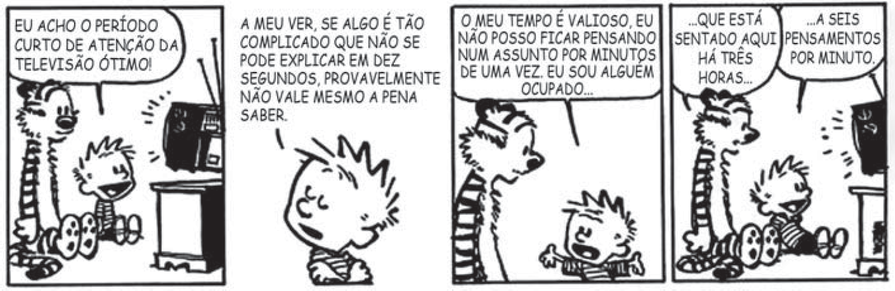

Sobre a televisão, considere a tirinha e o texto a seguir.

Disponível em: https://www.coletivando.files.wordpress.com. Acesso em: 25 jul. 2015.
A televisão é este contínuo de imagens, em que o telejornal se confunde com o anúncio de pasta de
dentes, que é semelhante à novela, que se mistura com a transmissão de futebol. Os programas mal
se distinguem uns dos outros. O espetáculo consiste na própria sequência, cada vez mais vertiginosa,
de imagens.
PEIXOTO, N. B. As imagens de TV têm tempo? In: NOVAES, A. Rede imaginária: televisão e democracia.
São Paulo: Companhia das Letras, 1991 (adaptado).
Com base nos textos 1 e 2, é correto afirmar que o tempo de recepção típico da televisão como veículo
de comunicação estimula a
-
contemplação das imagens animadas como meio de reflexão acerca do estado de coisas no mundo
contemporâneo, traduzido em forma de espetáculo.
-
fragmentação e o excesso de informação, que evidenciam a opacidade do mundo contemporâneo,
cada vez mais impregnado de imagens e informações superficiais.
-
especialização do conhecimento, com vistas a promover uma difusão de valores e princípios amplos,
com espaço garantido para a diferença cultural como capital simbólico valorizado.
-
atenção concentrada do telespectador em determinado assunto, uma vez que os recursos expressivos
próprios do meio garantem a motivação necessária para o foco em determinado assunto.
-
reflexão crítica do telespectador, uma vez que permite o acesso a uma sequência de assuntos de
interesse público que são apresentados de forma justaposta, o que permite o estabelecimento
de comparações.